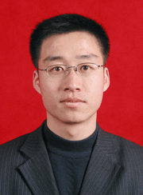

在实践中成才
尊敬的领导、老师、亲爱的同学们：
大家好！我是政法学院2001级的学生李中原。我报告的题目是《在实践中成才》。
我来自吉林省榆树市一个贫困的农村家庭。在我很小的时候，背负着大笔债务的父母开始艰难的创业，没有房子，没有像样的家具，每年父亲都到千里之外的地方打工，留下羸弱的母亲既拉扯我，又种着十几亩地。土豆和玉米面饼子是母亲和我顿顿不离的口粮。幼小的我没有和同龄人一样的新衣服，得不到渴望拥有的玩具。但在我尚未经世的童心里，父母种下了一颗种子，那是一种不服输的信念，今天它已经长成参天大树，并成为我心中最珍贵的财富。就这样，带着父
大家好！我是政法学院2001级的学生李中原。我报告的题目是《在实践中成才》。
我来自吉林省榆树市一个贫困的农村家庭。在我很小的时候，背负着大笔债务的父母开始艰难的创业，没有房子，没有像样的家具，每年父亲都到千里之外的地方打工，留下羸弱的母亲既拉扯我，又种着十几亩地。土豆和玉米面饼子是母亲和我顿顿不离的口粮。幼小的我没有和同龄人一样的新衣服，得不到渴望拥有的玩具。但在我尚未经世的童心里，父母种下了一颗种子，那是一种不服输的信念，今天它已经长成参天大树，并成为我心中最珍贵的财富。就这样，带着父
母“坦荡做人”的嘱托，我开始了求学之路。
上小学时离家有两个多小时的路程，八岁的我每天早上都要四、五点钟就起床。夏天，广袤的青纱帐中，夜风里夹带的是寂静的恐惧，点缀的是我孱弱瘦小的身影，一个人上学害怕极了，总是觉得后面有个人追赶着我；寒冬到来，三九天凛冽的寒风夹杂着米粒般大小的雪花，打到我的脸上像刀割一样。披星戴月，寒来暑往，我的勤奋和刻苦让我成为了一个“尖子生”，也让我几乎拥有了全部的头衔和荣誉。人生就是这样，在你暗自窃喜时，挫折就会让你体会摔倒的滋味。中考落榜，一个农村的孩子，长得瘦小单薄，不读书以后可怎么活呀？升高中，考大学对我来说可是唯一的出路呀！父亲和母亲对我今后的生存状况陷入了无限的担忧，由于对我的担心，病魔很快击倒了原本身体就不好的母亲，父亲开始为了医治母亲的病而四处奔波。当看到母亲那双对我无限期望的眼睛时，我的眼在流泪，心在滴血，可是我一句话也没有说，而是默默地出了家门，因为我不想让他们看见我沮丧的样子而难过。“为什么？为什么？……”出了家门我漫无目地走着，想了很多，难道我就这样一蹶不振，就这样被打倒，就这样放弃，从此回家种地？不，我不甘心，我不服！我告诉自己：苦难是人生最好的老师，勤奋一定可以创造辉煌。
经过一番拼搏，在2001年9月，我成为村子里的第一个大学生，以优异的成绩迈入了这所成就我梦想、令我骄傲的师大校园。尽管家庭贫困，我始终在不断努力改变，市场调查员、校园代理、做家教……改变着角色，改变着我的生活。大一的下学期，我的辅导员赵华老师得知了我的情况，找到了我，让我负责院里的复印工作。院领导也拿出一千元钱作为我的启动资金。在大家的帮助下，我的生活有了一定的改善。在师大我深深体会到了家的温暖，我开始全身心地投入到学习和工作中。我下定决心——
在学生活动中锻炼成才
刚搬到净月校区，大家对环境还不太适应，学习气氛不是太浓。而学生会在促进学生学习积极性上具有很大作用。作为学生会主席，如何最大限度地激发广大同学的学习热情，如何使学生会这一学生自治组织在广大同学学习和生活中最积极地发挥作用。这些是我一直以来冥思苦想的问题。与同学谈心，发调查问卷，不断上网、看书，借鉴国内高校学生会建设的先进经验。我几乎是用上了所有的课余时间。我发现建立“学术科研型”学生会是最佳的选择。以学术科研为目标，为热心学术的同学提供一个自我展示的平台，配合校里的“双百论坛”， 我组织了“学子论坛”。记得第一次“学子论坛”是在户外举行的。因为是第一次，大多数同学持一种观望和尝试的态度，并不十分积极，活动现场冷冷清清。面对这种情况，我身先士卒，和几个学生干部展开了激烈的学术讨论，我们的真诚和激情，感染着每一个路过的同学，他们不禁走过来说上几句，便不知不觉地加入了讨论。看着大家入神的关注并积极地参与活动时，那一刻的感觉真甜蜜，苦呀，累呀，统统烟消云散。直到活动结束时，才意识到太阳是那样火辣，汗水已经湿透衣衫，肚子也已经在“咕咕”抗议了。此外我组织学术部在各专业建立了学习小组，采取“组内合作，组间竞争”的方式，针对某一问题，各小组分别调查研究，然后选出代表阐述自己的见解，大家讨论，引导同学从不同专业、不同视角，发现问题、分析问题。在观点碰撞中产生火花，在学术争鸣中增长知识。学术科研型学生会的建立对学生会组织本身同样产生了十分重要的作用。组织内部成员不断学习，在学习的互动过程中增强了团队的凝聚力，增强了组织的生命力，确保学生干部能够“与时俱进”，从而使学生会更好的为广大同学服务。在大家的努力下，学院的学习气氛一天天浓厚了，同学们关注学术、走进学术的热情也慢慢的高了起来。广大学生干部成为了学习和工作兼优的楷模和典范。众志成城，无坚不摧，在我担任学生会主席期间，我院学生会先后取得了东北师范大学净月校区唯一的“五星级”学生会创建单位，东北师范大学第四十届运动会团体总分第三名、精神文明奖、文艺表演奖以及东北师范大学“精英杯”篮球赛的冠军等奖项，抚摸着一份份荣誉证书，与学生会同学共同奔忙的一幕一幕在我眼前浮现。每一张证书都承载着我为学生会付出的一点一滴。
非典病毒肆虐的时候，在往日祥和宁静的师大校园中，人们正以前所未有的力度抗击非典。配合净月校区有限的警力，我们学院率先承担起 “校园卫士”的工作，作为学生干部，我们深深感受到了自己肩上的责任重大，丝毫不敢懈怠。记得一次几个社会上的人想跳墙进入学校，我们上前去阻止，对方回应的却是无理和谩骂，甚至是威胁，我们不怕这些，只要能让大家安全地在校园里生活、学习，付出再多也值得。寝室开门的时候我们第一个走，关楼门时，我们最后回。我把学生会干部分成了多个小组，每个小组轮流换岗，而我则会在第一时间出现在每一个小组的面前。我要告诉大家：我陪伴着大家，我们同舟共济，一定可以战胜困难。二十多个日子，我人日见消瘦，疲惫不堪，可我没有半点怨言。我是一名学生干部，是师大培养了我。我应该为母校的发展而无私的奉献。
大学期间的学习无比重要，可更重要的是，我们所学的知识要放到社会中去检验。于是，我珍惜每一次实践的机会，我决心——
在社会实践中进一步发展
2004年4月1日，由于我在学生组织中的工作经历，我被共青团长春市委和我校选派到共青团长春市绿园区委工作。三个月的基层工作，我进一步体验到了民情，了解了民生。我负责全区非公有制企业团组织的建设，进驻企业初期，我遇到不少阻力。刚被派到绿园区日新工贸有限公司开展团建工作时，很多主管都说“不需要”，还直截了当地问我“建团能有什么用啊？能为企业解决什么实际问题？”，面对他们的质问，我的心里凉凉的。没有一个信任的眼神投向我，没有一句温暖的话鼓励我，我怀念在学生会工作的日子，那么多的老师和同学支持我。在这里，我觉得委屈，我深知处境艰难。但我只能一遍遍告诉自己：“如果事情很容易，还要我干什么？”。没有办公室，老板也不给我安排工作，我就直接去和员工交朋友，并借此“摸底”。我发现，虽然这个公司青年员工占80％，但他们就像一盘散沙，对企业没什么感情，甚至还有些抵触情绪。“从企业长远发展考虑，这样下去可不行。”一方面三番五次去找老板谈，一方面主动组织青年员工开展联谊、旅游、拔河比赛等活动，同时开展岗位培训、技能大赛。我把在学校组织同学的方法都用在这上，用心换心很难，但真的可以实现。没多久，青年员工开始由衷地说：“在私企，一样有家的感觉”。员工精神面貌有所改变，企业效益也有了提高，终于等到老板的允诺：你到办公室参与人事管理工作吧。我站在那里，真切的体会着用真诚和热心换来的成功的喜悦。2004年6月，就在我进驻日新工贸2个月后，老板李维静亲自来到团绿园区委，提出正式建团申请。我懂得了一个初入社会大学生想有所成绩的步履艰难，也懂得了自信与坚持是大学生扬帆起航的双浆。
如今，绿园区非公有制企业建团率从不足70%上升到95%以上，我的工作得到了团市委领导和区委领导的认可，2004年7月1日，我被共青团长春市绿园区委评为“长春市绿园区先进中国志愿者”。此外，我还被共青团长春市委和长春市慈善会两次评为“长春市先进慈善志愿者”。同年9月，《中国青年报》的记者采访我时，我的心情很平静。回望自己走过的路，苦过累过，哭过笑过，但当一切都过去，所有的经历都沉淀成为人生的财富，融化在我的血液中，凝聚成我笑对困境的勇气和力量。我的点滴付出、我的真诚和努力换来了他人的尊敬和支持，我深深地感到了自己的价值。如今，我已经光荣地成为了一名中国共产党党员，让青春在党的事业中闪光，让生命在党的事业中永恒，我无怨无悔！
就在我近乎疯狂地工作着时，我的学习成绩却在慢慢下滑。英语四级考试，第一次我只得到了42分。这对于我无疑是个沉重的警示。谁说男儿有泪不轻弹？每当假期回家，看到父母为我准备的好吃的，看到父母为我操劳而日渐憔悴，我只有陷入无尽的忏悔和痛苦之中。一次，母亲问我：“听你的同学说你们英语学习要过级吧？你过几级了？”我愣住了，我原以为没有文化的母亲是永远都不会知道的。我无言以对，只好撒谎说：“我过四级了。”从那以后，母亲逢人便说：“我的儿子英语都过四级了！”母亲因为儿子的一点点成绩而无比的欣喜。而我的母亲呀！你哪知道那是儿子在欺骗你。我不敢再欺骗我的母亲，我深知作为儿子，我必须无时无刻不让我的父母骄傲，这是我的责任。就如同他们生我、养我一样！我告诉自己：我是学生，我的天职就是学习，我必须加倍努力！以后的日子里，我顺利通过了四级考试，并取得了不错的成绩。课余时间我尽可能让自己多泡在图书馆里，三年来，我阅读了大量的学术著作，先后获得了“二等奖学金”、“教师技能”奖学金、“学有专长”奖学金和两次“社会贡献”奖学金并且连续三年被评为优秀学生干部。我撰写的《农村女性发展问题的探索性研究》一文发表在我校团委主办的学术刊物《希望之星》上。前不久，我被保送为我校“2+3”研究生。
我亲爱的学弟学妹们，每个人的一辈子都不可能是常胜将军，不可能不遇到一点挫折和困难，关键时刻应鼓起敢于面对严峻现实的勇气。一位战斗英雄说过这样一句话：在战场上，即使我倒下去了，我的目光也要看着前面。因此，今天，我不祝你们的未来一帆风顺，我祝你们即使在一万次的跌倒之后，仍旧一万次的站起来！坚信在师大四年的学习生活中你们会学有所成，成为经世济国的栋梁之材！
上小学时离家有两个多小时的路程，八岁的我每天早上都要四、五点钟就起床。夏天，广袤的青纱帐中，夜风里夹带的是寂静的恐惧，点缀的是我孱弱瘦小的身影，一个人上学害怕极了，总是觉得后面有个人追赶着我；寒冬到来，三九天凛冽的寒风夹杂着米粒般大小的雪花，打到我的脸上像刀割一样。披星戴月，寒来暑往，我的勤奋和刻苦让我成为了一个“尖子生”，也让我几乎拥有了全部的头衔和荣誉。人生就是这样，在你暗自窃喜时，挫折就会让你体会摔倒的滋味。中考落榜，一个农村的孩子，长得瘦小单薄，不读书以后可怎么活呀？升高中，考大学对我来说可是唯一的出路呀！父亲和母亲对我今后的生存状况陷入了无限的担忧，由于对我的担心，病魔很快击倒了原本身体就不好的母亲，父亲开始为了医治母亲的病而四处奔波。当看到母亲那双对我无限期望的眼睛时，我的眼在流泪，心在滴血，可是我一句话也没有说，而是默默地出了家门，因为我不想让他们看见我沮丧的样子而难过。“为什么？为什么？……”出了家门我漫无目地走着，想了很多，难道我就这样一蹶不振，就这样被打倒，就这样放弃，从此回家种地？不，我不甘心，我不服！我告诉自己：苦难是人生最好的老师，勤奋一定可以创造辉煌。
经过一番拼搏，在2001年9月，我成为村子里的第一个大学生，以优异的成绩迈入了这所成就我梦想、令我骄傲的师大校园。尽管家庭贫困，我始终在不断努力改变，市场调查员、校园代理、做家教……改变着角色，改变着我的生活。大一的下学期，我的辅导员赵华老师得知了我的情况，找到了我，让我负责院里的复印工作。院领导也拿出一千元钱作为我的启动资金。在大家的帮助下，我的生活有了一定的改善。在师大我深深体会到了家的温暖，我开始全身心地投入到学习和工作中。我下定决心——
在学生活动中锻炼成才
刚搬到净月校区，大家对环境还不太适应，学习气氛不是太浓。而学生会在促进学生学习积极性上具有很大作用。作为学生会主席，如何最大限度地激发广大同学的学习热情，如何使学生会这一学生自治组织在广大同学学习和生活中最积极地发挥作用。这些是我一直以来冥思苦想的问题。与同学谈心，发调查问卷，不断上网、看书，借鉴国内高校学生会建设的先进经验。我几乎是用上了所有的课余时间。我发现建立“学术科研型”学生会是最佳的选择。以学术科研为目标，为热心学术的同学提供一个自我展示的平台，配合校里的“双百论坛”， 我组织了“学子论坛”。记得第一次“学子论坛”是在户外举行的。因为是第一次，大多数同学持一种观望和尝试的态度，并不十分积极，活动现场冷冷清清。面对这种情况，我身先士卒，和几个学生干部展开了激烈的学术讨论，我们的真诚和激情，感染着每一个路过的同学，他们不禁走过来说上几句，便不知不觉地加入了讨论。看着大家入神的关注并积极地参与活动时，那一刻的感觉真甜蜜，苦呀，累呀，统统烟消云散。直到活动结束时，才意识到太阳是那样火辣，汗水已经湿透衣衫，肚子也已经在“咕咕”抗议了。此外我组织学术部在各专业建立了学习小组，采取“组内合作，组间竞争”的方式，针对某一问题，各小组分别调查研究，然后选出代表阐述自己的见解，大家讨论，引导同学从不同专业、不同视角，发现问题、分析问题。在观点碰撞中产生火花，在学术争鸣中增长知识。学术科研型学生会的建立对学生会组织本身同样产生了十分重要的作用。组织内部成员不断学习，在学习的互动过程中增强了团队的凝聚力，增强了组织的生命力，确保学生干部能够“与时俱进”，从而使学生会更好的为广大同学服务。在大家的努力下，学院的学习气氛一天天浓厚了，同学们关注学术、走进学术的热情也慢慢的高了起来。广大学生干部成为了学习和工作兼优的楷模和典范。众志成城，无坚不摧，在我担任学生会主席期间，我院学生会先后取得了东北师范大学净月校区唯一的“五星级”学生会创建单位，东北师范大学第四十届运动会团体总分第三名、精神文明奖、文艺表演奖以及东北师范大学“精英杯”篮球赛的冠军等奖项，抚摸着一份份荣誉证书，与学生会同学共同奔忙的一幕一幕在我眼前浮现。每一张证书都承载着我为学生会付出的一点一滴。
非典病毒肆虐的时候，在往日祥和宁静的师大校园中，人们正以前所未有的力度抗击非典。配合净月校区有限的警力，我们学院率先承担起 “校园卫士”的工作，作为学生干部，我们深深感受到了自己肩上的责任重大，丝毫不敢懈怠。记得一次几个社会上的人想跳墙进入学校，我们上前去阻止，对方回应的却是无理和谩骂，甚至是威胁，我们不怕这些，只要能让大家安全地在校园里生活、学习，付出再多也值得。寝室开门的时候我们第一个走，关楼门时，我们最后回。我把学生会干部分成了多个小组，每个小组轮流换岗，而我则会在第一时间出现在每一个小组的面前。我要告诉大家：我陪伴着大家，我们同舟共济，一定可以战胜困难。二十多个日子，我人日见消瘦，疲惫不堪，可我没有半点怨言。我是一名学生干部，是师大培养了我。我应该为母校的发展而无私的奉献。
大学期间的学习无比重要，可更重要的是，我们所学的知识要放到社会中去检验。于是，我珍惜每一次实践的机会，我决心——
在社会实践中进一步发展
2004年4月1日，由于我在学生组织中的工作经历，我被共青团长春市委和我校选派到共青团长春市绿园区委工作。三个月的基层工作，我进一步体验到了民情，了解了民生。我负责全区非公有制企业团组织的建设，进驻企业初期，我遇到不少阻力。刚被派到绿园区日新工贸有限公司开展团建工作时，很多主管都说“不需要”，还直截了当地问我“建团能有什么用啊？能为企业解决什么实际问题？”，面对他们的质问，我的心里凉凉的。没有一个信任的眼神投向我，没有一句温暖的话鼓励我，我怀念在学生会工作的日子，那么多的老师和同学支持我。在这里，我觉得委屈，我深知处境艰难。但我只能一遍遍告诉自己：“如果事情很容易，还要我干什么？”。没有办公室，老板也不给我安排工作，我就直接去和员工交朋友，并借此“摸底”。我发现，虽然这个公司青年员工占80％，但他们就像一盘散沙，对企业没什么感情，甚至还有些抵触情绪。“从企业长远发展考虑，这样下去可不行。”一方面三番五次去找老板谈，一方面主动组织青年员工开展联谊、旅游、拔河比赛等活动，同时开展岗位培训、技能大赛。我把在学校组织同学的方法都用在这上，用心换心很难，但真的可以实现。没多久，青年员工开始由衷地说：“在私企，一样有家的感觉”。员工精神面貌有所改变，企业效益也有了提高，终于等到老板的允诺：你到办公室参与人事管理工作吧。我站在那里，真切的体会着用真诚和热心换来的成功的喜悦。2004年6月，就在我进驻日新工贸2个月后，老板李维静亲自来到团绿园区委，提出正式建团申请。我懂得了一个初入社会大学生想有所成绩的步履艰难，也懂得了自信与坚持是大学生扬帆起航的双浆。
如今，绿园区非公有制企业建团率从不足70%上升到95%以上，我的工作得到了团市委领导和区委领导的认可，2004年7月1日，我被共青团长春市绿园区委评为“长春市绿园区先进中国志愿者”。此外，我还被共青团长春市委和长春市慈善会两次评为“长春市先进慈善志愿者”。同年9月，《中国青年报》的记者采访我时，我的心情很平静。回望自己走过的路，苦过累过，哭过笑过，但当一切都过去，所有的经历都沉淀成为人生的财富，融化在我的血液中，凝聚成我笑对困境的勇气和力量。我的点滴付出、我的真诚和努力换来了他人的尊敬和支持，我深深地感到了自己的价值。如今，我已经光荣地成为了一名中国共产党党员，让青春在党的事业中闪光，让生命在党的事业中永恒，我无怨无悔！
就在我近乎疯狂地工作着时，我的学习成绩却在慢慢下滑。英语四级考试，第一次我只得到了42分。这对于我无疑是个沉重的警示。谁说男儿有泪不轻弹？每当假期回家，看到父母为我准备的好吃的，看到父母为我操劳而日渐憔悴，我只有陷入无尽的忏悔和痛苦之中。一次，母亲问我：“听你的同学说你们英语学习要过级吧？你过几级了？”我愣住了，我原以为没有文化的母亲是永远都不会知道的。我无言以对，只好撒谎说：“我过四级了。”从那以后，母亲逢人便说：“我的儿子英语都过四级了！”母亲因为儿子的一点点成绩而无比的欣喜。而我的母亲呀！你哪知道那是儿子在欺骗你。我不敢再欺骗我的母亲，我深知作为儿子，我必须无时无刻不让我的父母骄傲，这是我的责任。就如同他们生我、养我一样！我告诉自己：我是学生，我的天职就是学习，我必须加倍努力！以后的日子里，我顺利通过了四级考试，并取得了不错的成绩。课余时间我尽可能让自己多泡在图书馆里，三年来，我阅读了大量的学术著作，先后获得了“二等奖学金”、“教师技能”奖学金、“学有专长”奖学金和两次“社会贡献”奖学金并且连续三年被评为优秀学生干部。我撰写的《农村女性发展问题的探索性研究》一文发表在我校团委主办的学术刊物《希望之星》上。前不久，我被保送为我校“2+3”研究生。
我亲爱的学弟学妹们，每个人的一辈子都不可能是常胜将军，不可能不遇到一点挫折和困难，关键时刻应鼓起敢于面对严峻现实的勇气。一位战斗英雄说过这样一句话：在战场上，即使我倒下去了，我的目光也要看着前面。因此，今天，我不祝你们的未来一帆风顺，我祝你们即使在一万次的跌倒之后，仍旧一万次的站起来！坚信在师大四年的学习生活中你们会学有所成，成为经世济国的栋梁之材！